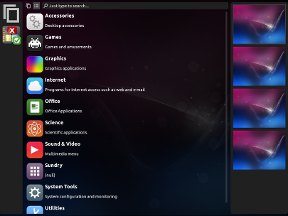

<div class="header">
    <h1 class="slidetitle">App Dashboard with Workspaces</h1>
</div>

<div class="main">
    <div class="text">
            budgie-remix ships with a hidden feature: <strong>XfDashboard</strong>. Press <strong>CTRL+TAB</strong> to summon the dashboard.
            <br/><br/>
            XDashboard provides a GNOME Shell like interface with app overview, search and workspaces support.
    </div>

    
</div>
